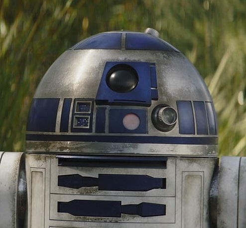
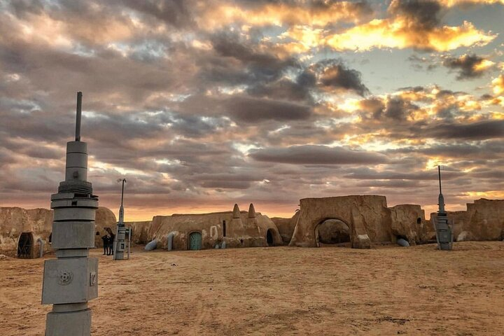
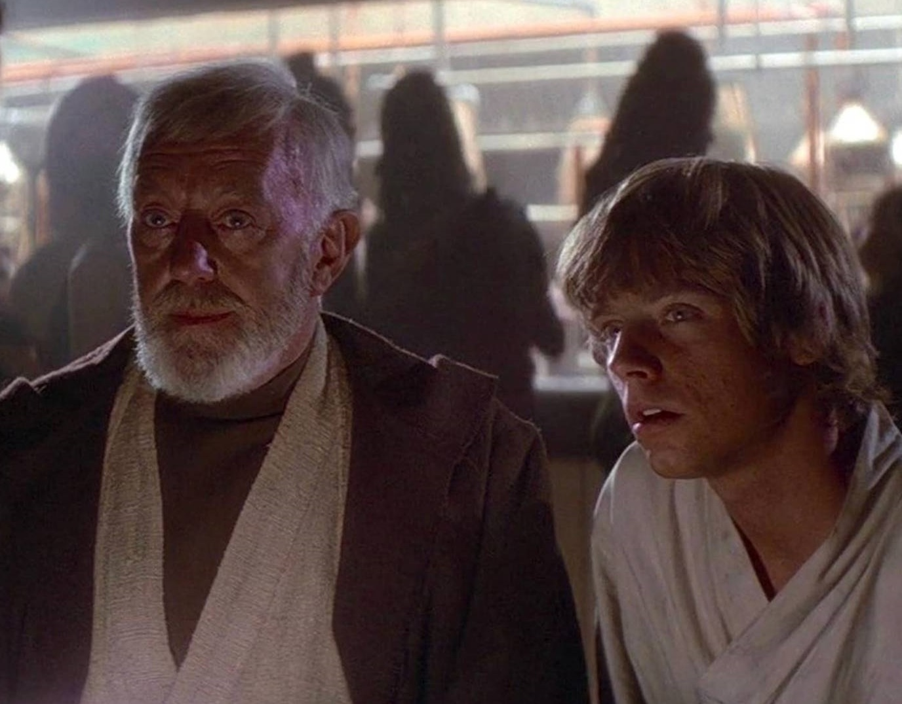
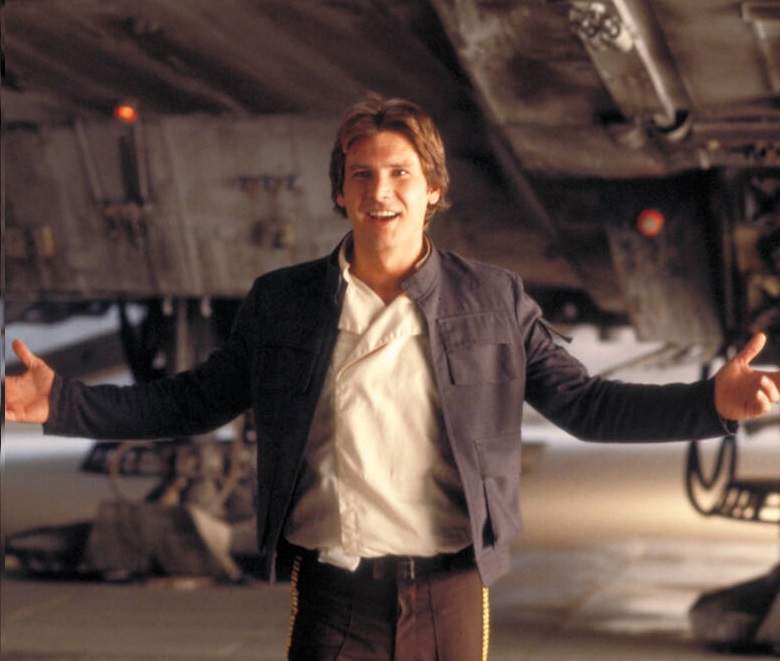
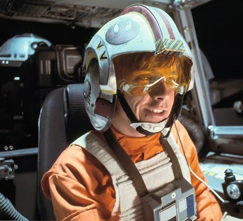
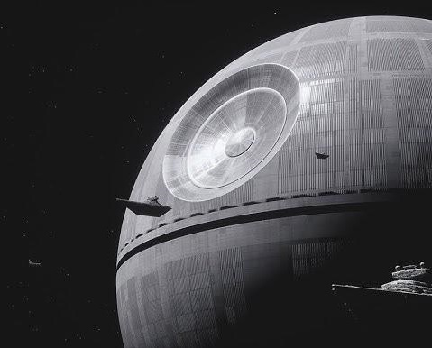
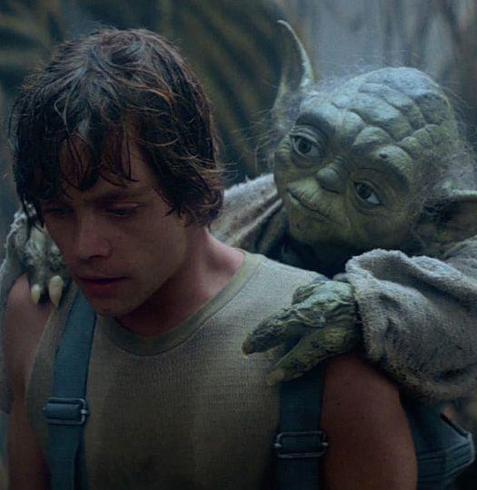
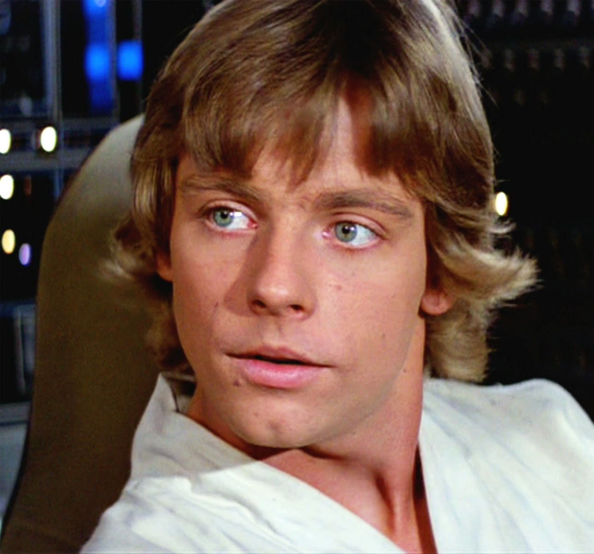
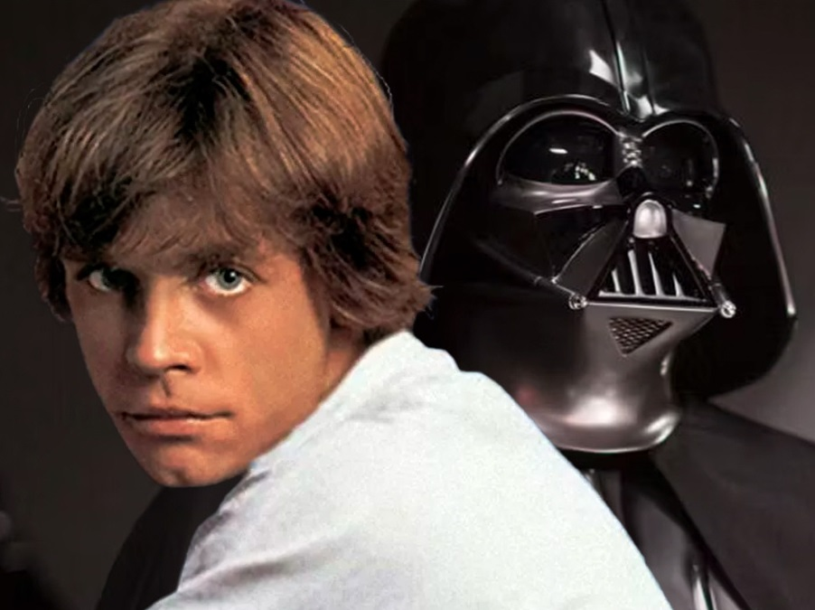

uma história sobre olhar o horizonte
Duas Luas,
Um Destino
A jornada de Luke Skywalker
O Horizonte Duplo
Em um planeta de dois sóis, nas bordas esquecidas da galáxia, um jovem sonha com algo maior do que a fazenda onde cresceu.

Uma Mensagem Escondida
Um droide errante carrega um segredo: um pedido de socorro de uma princesa, escondido dentro de sua memória. O jovem não sabia, mas aquele era o primeiro passo de uma jornada que mudaria sua vida.

Cinzas
Quando retorna para casa, encontra apenas cinzas. Não há mais nada que o prenda àquele lugar. A partir daqui, só existe um caminho: seguir em frente.

A Energia Que Conecta Tudo
Um velho eremita revela que conheceu seu pai — e que existe uma energia que conecta todos os seres vivos. Ele oferece ensinar o jovem a senti-la, a confiar nela.

Sem Volta Atrás
Entre criaturas estranhas e contrabandistas, ele encontra uma nave e um piloto disposto a arriscar tudo. Não há mais como voltar atrás — a galáxia inteira se abre diante dele.

O Que Resta da Inocência
Resgates arriscados, fugas por pouco, perdas dolorosas. Cada provação tira um pouco da inocência do jovem e o aproxima de quem ele precisa se tornar.

Maior Que a Lógica
Diante da arma mais poderosa já construída, resta apenas uma chance. Não há mais tempo para hesitar — é preciso confiar em algo maior que a lógica ou a mira de uma máquina.

O Impossível Se Torna Possível
Ele desliga os instrumentos. Fecha os olhos. E confia na voz que o guia por dentro.

De Garoto a Herói
O garoto que sonhava com o horizonte agora é reconhecido como herói. Mas essa é apenas a primeira etapa de uma jornada muito mais longa.

A Verdade Sobre Quem Ele É
Ele descobriria, mais tarde, que as maiores batalhas não acontecem apenas lá fora — e que a verdade sobre quem ele é pode ser mais difícil de enfrentar do que qualquer inimigo.
continua...